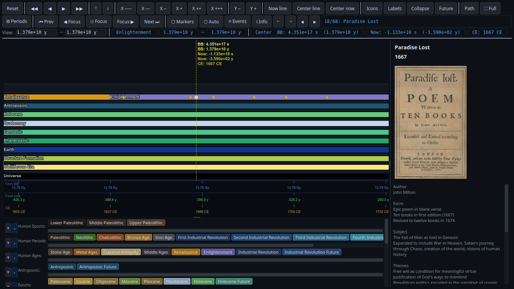
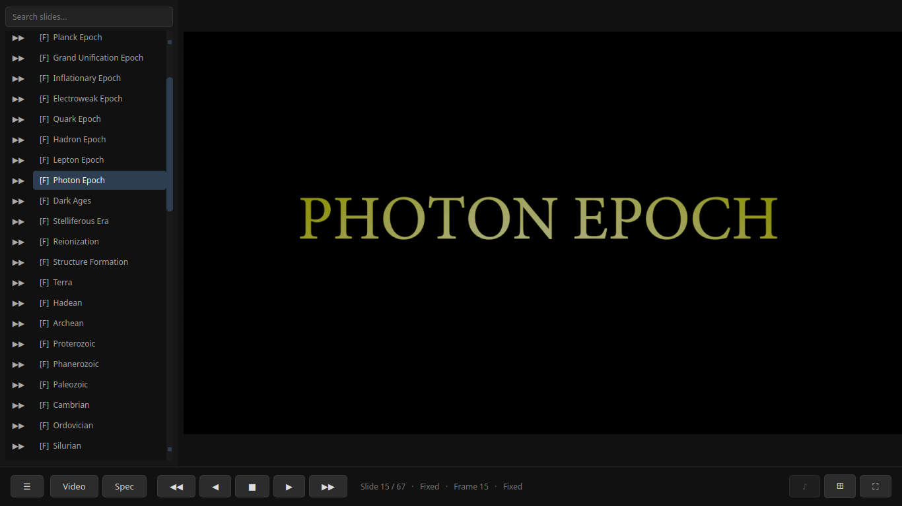
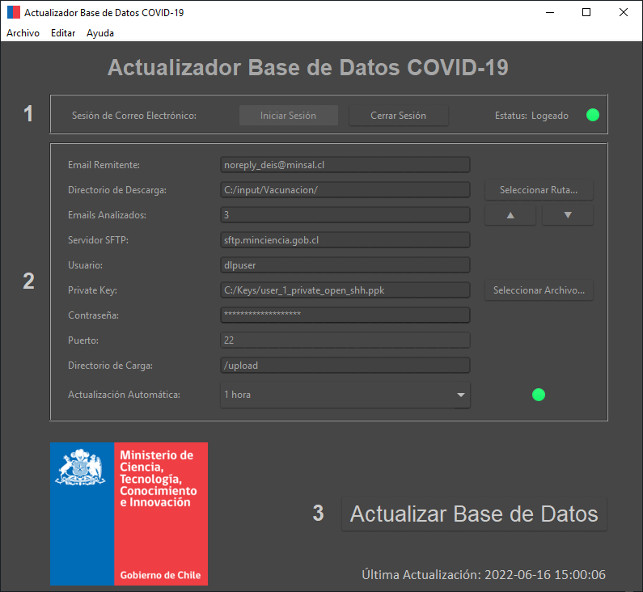

Python Developer · Industrial Engineer
I'm a Python developer and industrial engineer working at the intersection of software and science, building automation tools, data pipelines, and analysis systems to think with. I'm also developing EpiTax, a semantic system that organizes thousands of knowledge entries, and writing Ultrabsolutus: Existence & Possibilia, a book on epistemology, metaphysics and cosmogeoanthropology.
Let me show you some of my work:
From Planck time to the heat death of the universe
Cosmological, geological and anthropological chronologies in a single interactive scene

Explore events across the lifetime of the universe: the birth of the first stars, the Chicxulub impact, the fall of the Roman Empire and future supercontinents.
Merge layers and zoom to feel the scale difference between the Paleoproterozoic and the Black Hole Era.
# Precision for cross-scale arithmetic
getcontext().prec = 60
D = Decimal # short alias used throughout
class Event:
"""A point event pinned to a coordinate on a lane."""
__slots__ = ('x', 'x0', 'x1', 'lane', 'title', 'images',
'text', 'visible_date', 'icon', '_icon_pm', 'source_path')
def __init__(self, x: float, lane: int, title: str, images: list[str],
text: str, visible_date: str = '', x0: float | None = None,
x1: float | None = None, icon: str = '',
source_path: str = '') -> None:
self.x = D(x)
self.x0 = D(x0) if x0 is not None else None
self.x1 = D(x1) if x1 is not None else None
self.lane = int(lane)
self.title = title Cinematic presentations using video files and frame-based slides
Navigate the deck with the flow of footage

Transform ideas into films you can control, with frame-based slides that turn explanations into visual journeys your audience will remember.
class Slide:
def __init__(self, index: int, kind: SlideKind, a: int,
b: int | None = None, name: str = ""):
self.index = index
self.kind = kind
self.a = a
self.b = b
self.name = name # original name from presentation file
def display_name(self) -> str:
label = self.name if self.name else f"Slide {self.index + 1}"
kind_tag = {"Fixed": "F", "Transition": "T", "Loop": "L"}[self.kind.value]
return f"[{kind_tag}] {label}"
def _smootherstep(t: float) -> float:
"""Smootherstep: slow start, fast middle, slow end (6t⁵ - 15t⁴ + 10t³)."""
t = max(0.0, min(1.0, t))
return t * t * t * (t * (t * 6 - 15) + 10) COVID-19 real-time data pipeline for Chile's pandemic response
Automated release of national epidemiological reports

Built in 2021 for the Mesa de Datos COVID-19, a joint effort of the Ministries of Science and Health, ABDC-19 automated the publication of epidemiological reports arriving from across the country, processing up to hundreds of files per health institution per cycle. The pipeline ran continuously, keeping the database behind the public dashboard updated to support transparent reporting for the general public, the scientific community and decision makers.
def upload_attachment(self, msg_id, service, sftp,
download_dir, upload_dir):
"""Download a single email attachment, extract it, and push via SFTP."""
message = service.users().messages().get(userId='me', id=msg_id).execute()
for part in message['payload']['parts']:
if 'attachmentId' not in part['body']:
continue
att = service.users().messages().attachments().get(
userId='me', messageId=msg_id, id=part['body']['attachmentId']
).execute()
data = base64.urlsafe_b64decode(att['data'].encode('UTF-8'))
archive_path = os.path.join(download_dir, part['filename'])
with open(archive_path, 'wb') as f:
f.write(data)
# Remove stale extraction from previous cycle
prefix = part['filename'][:-4]
for existing in os.listdir(download_dir):
if existing.startswith(prefix) and existing != part['filename']:
os.remove(os.path.join(download_dir, existing))
patoolib.extract_archive(archive_path, outdir=download_dir, interactive=False)
extracted = next(f for f in os.listdir(download_dir)
if f.startswith(prefix) and f != part['filename'])
sftp.put(os.path.join(download_dir, extracted), f"{upload_dir}/{extracted}")